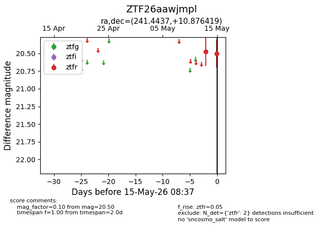
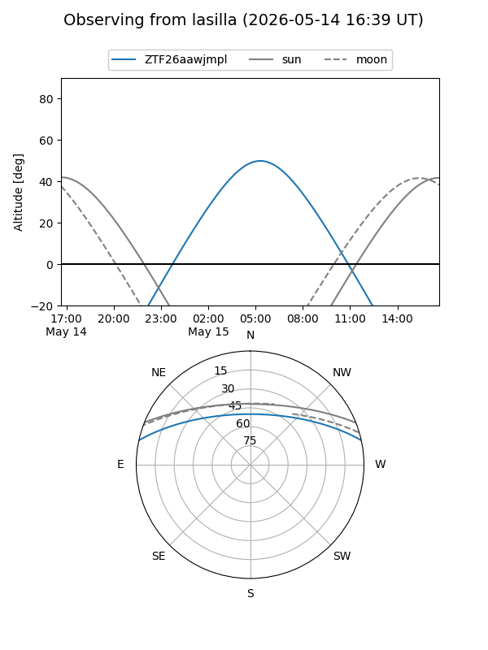
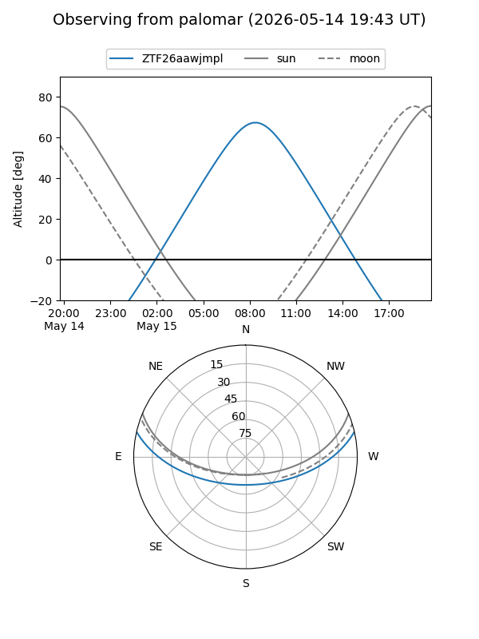
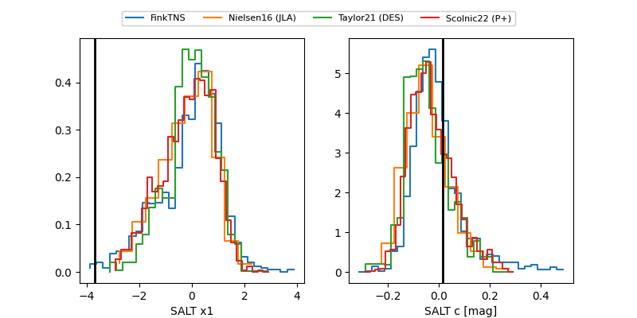

ZTF26aawjmpl
Target ZTF26aawjmpl at 2026-05-15 08:38
Aliases and brokers:
FINK: link
Lasair: link
ALeRCE: link
alt names
ZTF26aawjmpl (ztf,fink_ztf)
Coordinates:
equatorial (ra, dec) = 241.4437,+10.87642
equatorial (HMS+DMS) = 16:05:46.49,+10:52:35.11
galactic (l, b) = (23.0502,+41.62158)
Flags:
Photometry:
last ztfr=20.50
2 ztfr detections
Lightcurve

Visibility


Additional plots
